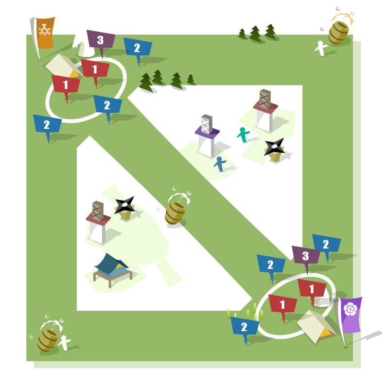

- 
-
- 420秒
- 增加生命120點、1裝甲、14攻擊力
- 700秒
- 增加生命240點、2裝甲、28攻擊力
- 420秒
- 增加生命360點、3裝甲、42攻擊力
軍隊升級系統123
侍大將單位
- 侍大將．本營
- 駐守本營的兩員侍大將，擁有侍大將中最強的戰力，殲滅任何進入射程中的敵人，但本身無法移動。
- 生命 3,600
傷害 681 - 606
傷害類型 混沌
裝甲 23
裝甲屬性 英雄
技能 偵查者、冰霜攻擊、
法術免疫
擊殺賞金 1,300 - 機械化部隊
- 侍大將．駐守
- 各路定點防禦的三員侍大將，會嘗試追擊逃離的敵人，脫離戰鬥後返回駐點。
- 生命 4,850
傷害 309 - 310
傷害類型 穿刺
裝甲 23
裝甲屬性 英雄
技能 偵查者、法術免疫
擊殺賞金 800 - 機械化部隊
- 侍大將．巡邏
- 於自身陣營依固定路徑巡邏的一員侍大將，會嘗試追擊敵人，並於脫戰後恢復巡邏姿態。
- 生命 4,850
傷害 309 - 310
傷害類型 穿刺
裝甲 23
裝甲屬性 英雄
技能 偵查者、法術免疫
擊殺賞金 800 - 機械化部隊
一般部隊單位
- 足輕
- 基礎近戰單位，戰場中的雜魚們，於固定波數增援。
- 等級 1
生命 700
法力 200
傷害 48 - 79
傷害類型 普通
裝甲 1
裝甲屬性 重型
技能 --
擊殺賞金 41~43
- 弓箭手
- 基礎遠程單位，於固定波數增援，對英雄造成傷害較低。
- 等級 2
生命 750
法力 200
傷害 46 - 52
傷害類型 穿刺
裝甲 2
裝甲屬性 未裝甲
技能 --
擊殺賞金 43~45
- 騎兵
- 高機動性單位，速度高，出動時能迅速追上友軍，給予支援。
- 等級 3
生命 880
法力 200
傷害 60 - 68
傷害類型 普通
裝甲 4
裝甲屬性 重型
技能 --
擊殺賞金 61~63
- 鐵炮兵
- 對英雄與建築物可造成更大傷害，取而代之的是薄弱的防護能力。
- 等級 3
生命 780
法力 200
傷害 77 - 85
傷害類型 攻城
裝甲 2
裝甲屬性 未裝甲
技能 對英雄2倍傷害
擊殺賞金 61~63
- 近衛大將
- 魔法免疫的強力單位，具高血量與高裝甲，擔任衝鋒陷陣的角色。
- 等級 1
生命 3,000
法力 200
傷害 202 - 250
傷害類型 普通
裝甲 11
裝甲屬性 重型
技能 魔法免疫
擊殺賞金 10
- 旗本．武士
- 一旦摧毀敵方任一軍營，即隨騎兵該波增援一同出動。
- 等級 1
生命 1,700
法力 200
傷害 75 - 76
傷害類型 普通
裝甲 8
裝甲屬性 中型
技能 無想轉生
擊殺賞金 10